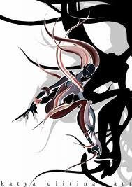

Векторное изображение

Разница м/у векторным и растровым изображением
Векторная графика
способ представления объектов и изображений в компьютерной графике, основанный на использовании элементарных геометрических объектов, таких как точки, линии, сплайны и многоугольники.
Для создания изображения векторного формата, отображаемого на растровом устройстве, используются преобразователи, программные или аппаратные (встроенные в видеокарту). Подавляющее большинство современных компьютерных видеодисплеев, в силу принципов используемых для построения изображения, предназначены для отображения информации в растровом формате. Кроме этого, существует узкий класс устройств, ориентированных исключительно на отображение векторных данных. К ним относятся мониторы с векторной развёрткой, графопостроители, а также некоторые типы лазерных проекторов. Термин «векторная графика» используется в основном в контексте двухмерной компьютерной графики.
Данный сайт создан как учебное пособие по теме "Компьютерная рафика"
Автор гр.114 Василенко В. А.